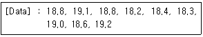
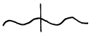
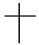
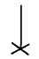

제선기능장 (2003-07-20 기출문제)
1과목: 임의 구분
1. 분광원료를 많이 사용하는 경우 Bosh angle은 어떻게 변화시키는 것이 좋은가?
- 작게한다.
- 일반조업 때와 같다.
- 크게 한다.
- Angle의 각도에 관계없이 높이만 크게 한다.
(정답률: 81%)

2. 철광석의 구비조건이 아닌 것은?
- 환원 분화성이 없어야 한다.
- 화야라이트, 일미나이트가 없어야 한다.
- 산화도가 낮아야 한다.
- Cu, As 등이 적어야 한다.
(정답률: 67%)
3. 제선의 다음 공정인 제강에 의한 강괴의 종류에 해당되지 않는 것은?
- 림드강
- 탄소강
- 킬드강
- 캐프드강
(정답률: 77%)
4. 출선구의 올바른 표현은?
- Hearth
- Slag hole
- Crucible
- Tap hole
(정답률: 86%)
5. 분광석을 소결할 때 소성에 필요한 열원은 무엇인가?
- 외부로부터 코크스로 가열한다.
- 원료에 배합된 분코크스의 연소열에 의한다.
- 버너로 중유를 연소시킨다.
- 코크스 오븐 가스(COG)의 연소에 의한다.
(정답률: 70%)
6. 산성(酸性)산화물에 속하는 것은?
- CaO
- MgO
- MnO
- SiO2
(정답률: 80%)
7. 분광의 괴상화 및 입도 균일화의 열적방법은?
- 소결
- 배소
- 침출
- 선광
(정답률: 87%)
8. 혼선차(Torpedo-car)의 역할과 관계 없는 것은?
- 고로에서 나오는 용선을 제강 공장에 운반하는 용기이다.
- 용선을 보온, 저장한다.
- 용선을 냉선괴(pig)로 만든다.
- 탈황반응 용기로 사용 가능하다.
(정답률: 87%)
9. 열풍로가 4기 있을 때는 병렬송풍(staggered parallel) 제어방식을 이용하여 시간차를 두고 2기의 열풍로에 동시통풍하는 가장 큰 목적은?
- 고온의 열풍을 얻기 위해서
- 혼입냉풍량을 얻기 위해서
- 격자 벽돌의 수명을 연장하기 위해서
- 소결광의 점결성을 위해서
(정답률: 69%)
10. 산소부화 송풍에 관한 일반적인 설명이 틀린 것은?
- 풍구앞 연소대의 온도는 저하한다.
- 노내의 가스속도가 감소한다.
- 장입물의 강하가 빨라진다.
- 보시가스의 농도가 크게 된다.
(정답률: 70%)
11. 고로의 최초 화입을 위한 충전작업시에 노내 충전물로 부적당한 것은?
- 코크스와 괴스래그
- 철광석과 석회석
- 침목과 숯
- 사철과 분코크스
(정답률: 77%)
12. 고로조업을 통하여 용선중의 유해성분인 S분을 가능한 한 많이 제거해야 한다. 탈황능 향상에 도움이 되는 조치로서 가장 옳은 것은?
- 슬랙량을 감소시켜 준다.
- 노열을 하향 조정하여 선중 [Si]을 적정히 낮추어 준다.
- 염기도를 높인다.
- 습분을 높이거나 O2 부화율을 증가시켜 준다.
(정답률: 79%)
13. 제선과정에서 일어나는 주된 노내 반응은?
- 산화반응
- 환원반응
- 배소반응
- 하소반응
(정답률: 86%)
14. 황을 제거시키는데 가장 효과적인 원소는?
- Cu
- Mn
- Si
- C
(정답률: 74%)
15. 다음의 기계장치 중 옳지 않은 것은?
- 동력으로 운전됨 → 동력차단
- 회전중 파괴될 위험이 있는 연마반의 숫돌 → 복개 장치
- 목공용 둥근 톱날판 → 급정지 장치
- 동력으로 운전하는 절단기 → 칼날 또는 금형으로 인한 위험방지용 안전장치
(정답률: 81%)
16. 이동식 전기 기계의 사고를 막기위해 필요한 설비는?
- 접지설비
- 고압계
- 방폭등
- 대지전위 상승장치
(정답률: 87%)
17. 고로의 화입용 코크스는 승열용 코크스와 베드 코크스(bed coke)로 구분되는데 베드 코크스를 바르게 설명한 것은?
- 풍구 상부와 연소대 외측에 연소하지 않는 코크스
- 풍구 하부와 연소대 내측에 연소하지 않는 코크스
- Shaft 하부의 코크스
- Shaft 상부의 코크스
(정답률: 81%)
18. 분광소결시에 첨가하는 분코크스의 평균입도의 목표치 크기(mm)는 어느 정도가 적합한가?
- 1.2
- 30.0
- 45.0
- 70.0
(정답률: 78%)
19. 고로에서 철광석이 환원되는 순서가 맞는 것은?
- Fe3O4 → Fe2O3 → FeO → Fe
- Fe2O3 → Fe3O4 → FeO → Fe
- FeO → Fe2O3 → Fe3O4 → Fe
- Fe3O4 → FeO → Fe2O3 → Fe
(정답률: 77%)
20. 고로내 가스압력을 통상보다 높게 해서 하는 조업이 고압조업이다. 고압조업의 효과로써 적당하지 못한 것은?
- 출선량의 증가
- 연료비의 감소
- 고로내 더스트(dust)의 생성감소
- 노체 열부하(熱負荷)감소
(정답률: 71%)
2과목: 임의 구분
21. 선철 Ton당 장입원료 중 Fe분의 합계가 950㎏이고 이 중 0.8%가 FeO로써 슬랙 중에 들어간다고 하면 슬랙 중의 FeO 무게는 약 몇 ㎏인가?
- 5.8
- 7.1
- 9.8
- 10.7
(정답률: 76%)
22. 듀랄류민 및 초듀랄류민 합금의 경화방법은?
- 개량처리
- 황온뜨임
- 석출경화
- 풀림
(정답률: 77%)
23. 빛깔이 금에 가까우며 금박 및 금분의 대용품으로 사용되는 Cu80%-Zn20%(Low brass)의 황동은?
- Muntz metal
- Delta metal
- Tombac
- Hard brass
(정답률: 78%)
24. 주물용선의 원료배합에 대하여 설명한 것중 틀린 것은?
- Si를 많이 함유하고 Mn을 적게 함유하도록 배합한다.
- 필요에 따라서 조업도를 약간 낮춘다.
- 광재의 염기도를 높게 한다.
- 일정량의 코크스량에 대하여 광석 장입량을 적게 한다.
(정답률: 64%)
25. 2차 벤츄리 스크레버의 출구에서 얻을 수 있는 청정도는 약 어느 정도 되는가?
- 100㎎/Nm3 이하
- 90㎎/Nm3 이하
- 70㎎/Nm3 이하
- 5㎎/Nm3 이하
(정답률: 76%)
26. 소결광의 환원 분화에 대하여 설명한 것중 틀린 것은?
- 소결광이 분화하는 것은 마그네타이트가 헤마타이트로 환원되면서 체적팽창을 일으키기 때문이다.
- 환원분화를 나타내는 지수는 RDI이다.
- 환원분화에 영향을 미치는 인자는 소결광중의 마그네타이트, 소결광의 염기도 등이다.
- 환원분화를 관리하는 것은 코크스 사용량을 조정하여 소결광중의 FeO를 관리하는 것이다.
(정답률: 62%)
27. 고로의 출선능력을 표시하는 것으로 맞는 것은?
- ton/day/m3
- ton/hr/m3
- kg/week/m3
- kg/month/m3
(정답률: 86%)
28. 소결과정 중 장입층의 온도에 영향을 주는 인자와 관련이 가장 적은 것은?
- 수분의 증발
- 괴철광석의 배합비
- 분코크스의 배합비
- 가스의 흐름에 의한 열 이동
(정답률: 59%)
29. 현재 천연산 철광으로 제철용에 가장 많이 사용되는 것은?
- 방연광
- 황동광
- 적철광
- 황산철광
(정답률: 84%)
30. 고로의 각 구역에서 일어나는 기능적 현상이 순서에 따라 올바르게 표기된 것은?
- 예열대→ 용융대→ 환원 및 침탄대→ 연소대→ 노상부
- 예열대→ 환원 및 침탄대→ 용융대→ 연소대→ 노상부
- 연소대→ 환원 및 침탄대→ 예열대→ 용융대→ 노상부
- 연소대→ 예열대→ 환원 및 침탄대→ 용융대→ 노상부
(정답률: 58%)
31. 고로가스의 성분 중 가장 많은 성분은?
- CO
- CO2
- H2
- N2
(정답률: 68%)
32. 소결광의 제품강도가 저하되었을 때 취할 수 있는 조업관리 방법으로 적합하지 않은 것은?
- 코크스의 배합을 높인다.
- 층두께를 낮춘다.
- 자철광의 배합을 높인다.
- 원료 중의 미분을 제거한다.
(정답률: 73%)
33. 고로의 송풍온도에 영향을 미치지 않는 것은?
- 열풍로 책커(checker)연와의 가열면적
- 송풍량
- 열풍로 돔(dome)의 온도
- 연소실에 사용되는 연료의 색깔
(정답률: 81%)
34. 광재에 대한 설명이 틀린 것은?
- 염기도가 높을수록 융점이 높아진다.
- 염기도가 높을수록 탈황이 잘된다.
- Al2O3의 함량이 높을수록 배제, 탈황이 나빠진다.
- MgO는 광재의 유동성을 나쁘게 한다.
(정답률: 82%)
35. 가스 발생량 4500m3, 노정가스중 N2 59.0%일 때 송풍량은 약 몇 m3인가? (단, 코크스에서 나오는 질소는 무시함)
- 2151
- 3361
- 4271
- 5381
(정답률: 74%)
36. 안전표식이 아닌 것은?
- 금지표식
- 방사능표식
- 주의표식
- 배관식별표식
(정답률: 84%)
37. 고로 내벽의 내화물의 구비조건이 아닌 것은?
- 마모에 강할 것
- 열전도율이 클 것
- 화학적 부식에 강할 것
- 고온에서 상당한 내압력을 가질 것
(정답률: 85%)
38. 내화 몰탈의 구비 조건이 아닌 것은?
- 필요한 내화성이 있을 것
- 사용연와와 화학성분이 같을 것
- 건조 및 소성에 따른 팽창이 클 것
- 충분한 접착력과 작업성이 좋을 것
(정답률: 82%)
39. 비점결탄 및 석유계 중질유(重質油)를 개질(改質)하고, 인조 점결탄 및 점결성 보전재(補塡材)를 사용하는 코크스 특수제조법은?
- SRC 법
- VM 법
- FC 법
- DIT 법
(정답률: 70%)
40. 원료탄에서 Gieseler 유동도는 점착성을 판정하는 방법이다. 측정의 기준이 되는 것은?
- 인장
- 응력
- 탄성계수
- 회전수
(정답률: 74%)
3과목: 임의 구분
41. 코크스로의 탄화실 너비는 압출기가 있는 쪽(PS)과 코크스가 나오는 쪽(CS)이 다르다. 따라서 건류를 동시에 끝내기 위한 노벽온도의 조절 방법으로 맞는 것은?
- CS쪽이 넓으므로 PS쪽의 온도를 올린다.
- PS쪽이 넓으므로 CS쪽의 온도를 올린다.
- CS쪽이 넓으므로 CS쪽의 온도를 올린다.
- PS쪽이 넓으므로 PS쪽의 온도를 올린다.
(정답률: 65%)
42. 코크스 제조시 사용되는 주연료의 종류로 맞는 것은?
- LNG, COG + BFG
- LDG, COG + LNG
- COG, COG + BFG
- LPG, LDG + BFG
(정답률: 77%)
43. 화학 반응 중 Solution loss(용융소실)가 일어나는 반응식은?
- CO + FeO → CO2 + Fe
- CO2 + C → 2CO - 40190 kcal/kmol
- C + FeO → CO + Fe
- FeO + C → Fe + CO2
(정답률: 74%)
44. 코크스 오븐(OVEN)조업시 발생되는 화성 부산물이 아닌 것은?
- COG
- TAR
- 조경유
- 분 코크스
(정답률: 72%)
45. Process의 유량을 검출할 수 있는 기기는?
- Orifice
- Control Valve
- Shut Off Valve
- 압력발신기
(정답률: 78%)
46. CAD시스템의 효과로 볼 수 없는 것은?
- 공정설계로 리드타임 증가
- 설계해석의 최적화
- 설계수정시간 단축
- 설계의 정확성
(정답률: 83%)
47. PLC Program 명령어 중 블록간의 직렬접속을 표시하는 기호는?
- PLS(펄스)
- ORB(오어블록)
- ANB(엔드블록)
- MCR(마스터 컨트롤 리셋)
(정답률: 82%)
48. 고로(용광로) 공장에서 장입설비의 원료 자동제어 순서를 나열한 것 중 원료의 흐름순서가 올바르게 연결된 것은?
- 절출 - 평량 - 균압 - 배압 - 장입
- 평량 - 절출 - 배압 - 균압 - 장입
- 배압 - 절출 - 평량 - 균압 - 장입
- 배압 - 절출 - 균압 - 평량 - 장입
(정답률: 67%)
49. 일시자석을 만들기 위하여 강판에 함금하는 원소는?
- 규소(Si)
- 탄소(C)
- 납(Pb)
- 알루미늄(Aℓ )
(정답률: 74%)
50. 자동제어에 관한 장점 중 옳지 않은 것은?
- 위험한 곳에 인간을 배치시켜야 할 일을 대신할 수 있다.
- 다량생산 품질향상의 균일화를 꾀할 수 있다.
- 인간보다 정확도와 정밀도가 증가함으로 기업의 이윤을 추구할 수 있다.
- 소량 다품종 생산에만 적합하다.
(정답률: 81%)
51. 소결설비 중 소결기에 배합원료를 장입하는 장치의 주요 기능에 해당되는 것은?
- 배합원료의 화학성분을 균일히 조정한다.
- 배합원료의 입도 분포를 고르게 유지한다.
- 배합원료의 장입층 입도 편석을 유도한다.
- 배합 원료 중 코크스 또는 무연탄이 고르게 배합되도록 유도한다.
(정답률: 64%)
52. 1개의 베터리(BATTERY)에 탄화실이 66문 설치되어 있고 1일 88문 작업을 수행하고자 할 때 조업 가동율(%)은?
- 약 75
- 약 58
- 약 133
- 약 154
(정답률: 75%)
53. 금속의 공통적 특징이 아닌 것은?
- 상온에서 수은을 제외하고 고체이다.
- 전성 및 연성이 작다.
- 열 및 전기를 잘 전달한다.
- 고유의 금속광택을 갖는다.
(정답률: 78%)
54. 정전 작업시 안전조치와 관련이 가장 먼 것은?
- 절연 보호구 착용
- 개폐기의 시건장치
- 잔류전하의 방전조치
- 검전기에 의한 충전여부 확인
(정답률: 79%)
55. 어떤 측정법으로 동일 시료를 무한 횟수 측정하였을 때 데이터의 분포의 평균치와 참값과의 차를 무엇이라 하는가?
- 신뢰성
- 정확성
- 정밀도
- 오차
(정답률: 67%)
56. 예방보전의 기능에 해당하지 않는 것은?
- 취급되어야 할 대상설비의 결정
- 정비작업에서 점검시기의 결정
- 대상설비 점검개소의 결정
- 대상설비의 외주이용도 결정
(정답률: 85%)
57. 관리한계선을 구하는데 이항분포를 이용하여 관리선을 구하는 관리도는?
- Pn 관리도
- U 관리도
 관리도
관리도- X 관리도
(정답률: 56%)
58. 로트(Lot)수를 가장 올바르게 정의한 것은?
- 1회 생산수량을 의미한다.
- 일정한 제조회수를 표시하는 개념이다.
- 생산목표량을 기계대수로 나눈 것이다.
- 생산목표량을 공정수로 나눈 것이다.
(정답률: 70%)
59. 다음의 데이터를 보고 편차 제곱합(S)을 구하면? (단, 소숫점 3자리까지 구하시오.)

- 0.338
- 1.029
- 0.114
- 1.014
(정답률: 67%)
60. 공정 도시기호중 공정계열의 일부를 생략할 경우에 사용되는 보조 도시기호는?




(정답률: 80%)